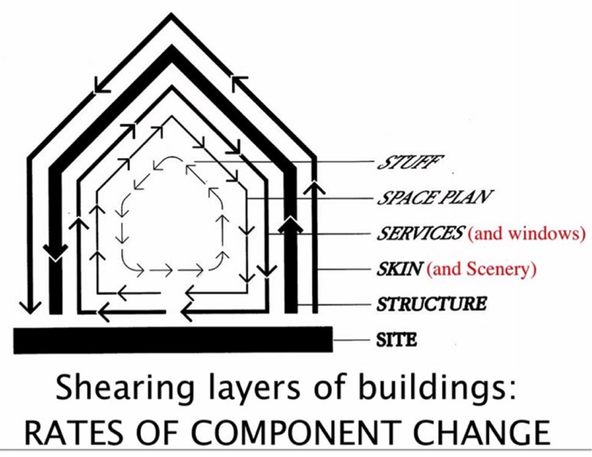

Lugano is located in...
- Switzerland
- Italy
- France
- Germany
This is a sample presentation which demonstates features of ASQ.
It contains the following questions:
Please select all correct options. It is possible that no option is correct.
Please select all correct options. It is possible that no option is correct.


Vitruvio, 23BC
Architecting, the planning and building of structures, is as old as human societies – and as modern as the exploration of the solar system
Eberhardt Rechtin, 1991
One Person can build it
An experienced team can build it
Do not try this without an architect
Was this designed by an architect?
CodeCity, Richard Wettel
Always choose the appropriate tools for the size of the project you are working on
Not easy to measure software size: LOC, GB, $
| MLOC | |
| OS/X 10.4 | 86 |
| Windows Vista | 50 |
| Windows XP | 40 |
| Debian 4.0 | 283 |

As the size and complexity of a software system increase, the design decisions and the global structure of a system become more important than the selection of specific algorithms and data structures.

The difficult part is to know which details to leave out and which should be emphasized
Stewart Brands
The Architecture of Open Source Software Systems
*Amy Brown and Greg Wilson (eds.) The Architecture of Open Source Applications, 2012
Richard N. Taylor, Nenad Medvidovic, Eric M. Dashofy, Software Architecture: Foundations, Theory and Practice, John-Wiley, January 2009, ISBN 9780470167748
Use a spacebar or arrow keys to navigate